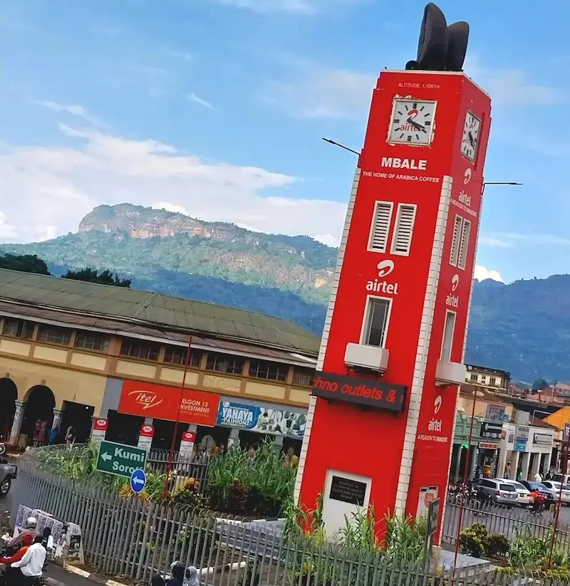

Mbale city is the Eastern Uganda's main hub for industries and sales business just at the foot of Mt Elgon.It became a city in 2021.The city is occupied majorly by Bamasaba commonly called Bagishu.
Geographically,the city is 1156km elevated up with mountain temperatures experienced as coldness and flesh bamboo plants in the surrounding villages.The cultural practice called Mbalu is a stress killer of its kind especiialyy din december festive holidays.Sweet sounds from bi drum,candidates smeared in mud and expect the whole city people to join when "Kadodi" sounds
